# install.packages("palmerpenguins") in console
library(ggplot2)
library(here)
library(palmerpenguins)
library(dplyr)Activity 4: Data visualization 2: Customizing plots
Jan. 14th, 2026, Jake and Seleona
Overview
Welcome! Today’s activity is all about the basics of customizing plots. We will continue using ggplot2 and will use two built-in datasets for this activity (no reading in data is necessary today!).
You will submit two outputs for this activity:
- A PDF of a rendered Quarto document with all of your R code (see below). Please include all of the code that appears in this document, in addition to adding your own code in the “Q#” sections.
If you have trouble submitting as a PDF, please ask Calvin or Malin for help. If we still can’t solve it, you can submit the .qmd file instead.
- A plot and research question from the final section
A note about submitting code:
As a general practice, it is good to use headers to denote which section of the homework you are in and add in your own comments about what each line is actually doing - this is excellent practice for organizing your own big R scripts in the future. A common way that you will code for the first few years of your coding career will consist of you revisiting old R scripts and copying/pasting code and/or adapting that code to your current problems. I promise you, your future self will be thrilled with your current self if you take the extra few minutes to 1) organize your code in a nice way and 2) provide detailed comments about what each line is doing (as well as what questions you have about it).
Also, don’t be afraid to use lots of blank lines! It is MUCH nicer for your future self to look at code that has a few blank lines in between sections of code than a bajillion lines in a row of straight code.
For the remaining activities, please put headers (either as comments in the code or as Quarto headers) to denote which question you are answering (e.g. “Q1:”) and precede your code with comments that describe what that code does.
1) Penguins!

Setting up
First, let’s load our packages. You should already have the here and ggplot2 packages installed; read them in from the library in your code. Also install and read in the palmerpenguins package, which contains built-in data - you may recognize this from Malin’s ggplot lecture!
We just installed a package which has data built into it. We are going to go ahead and store the penguins data frame as a data object anyway (not technically necessary because it’s already built-in, but this reinforces storing dataframes).
# Read in the palmer penguins data
penguins <- penguinsNext, let’s navigate to the help page of this dataset. Doing so provides information on the dataset and its various columns. We can learn that this dataset “includes measurements for penguin species, island in Palmer Archipelago, size (flipper length, body mass, bill dimensions), and sex”. Read on to learn about each column in the dataset.
# Putting a "?" in front of a function (or built-in dataset) will automatically bring up its help page!
?penguinsHelp on topic 'penguins' was found in the following packages:
Package Library
datasets /Library/Frameworks/R.framework/Versions/4.5-arm64/Resources/library
palmerpenguins /Library/Frameworks/R.framework/Versions/4.5-arm64/Resources/library
Using the first match ...Start with a question
Let’s start by forming a research question. Let’s ask: How are bill length and bill depth associated, and how does this vary by species of penguin?
Let’s create a basic graph to begin. Plotting bill_length_mm on the x-axis and bill_depth_mm on the y-axis.
ggplot(data = penguins, aes(x = bill_length_mm, y = bill_depth_mm)) +
geom_point()Warning: Removed 2 rows containing missing values or values outside the scale range
(`geom_point()`).
Q1.1: Do you see a relationship?
Q1.1 Answer: No. There may be 3 separate clusters, but there does not seem to be any clear relationship between the variables.
Does it look like there is a relationship between these variables? Describe the relationship.
Q1.2: Color the points by species of penguin
That previous graph only addresses part of our question: we asked not only “how are bill length and bill depth associated”, but also “how does this vary by species of penguin?”
To address the second part of our question:
Change the aesthetics of this plot to color the points by the species of penguin and
Interpret the graph by describing the relationship you see and if this new visualization changes your answer to Q1.1.
ggplot(data = penguins, aes(x = bill_length_mm, y = bill_depth_mm, color=species)) +
geom_point()Warning: Removed 2 rows containing missing values or values outside the scale range
(`geom_point()`).
Yes, there is a relationship betweeen variables within individual species.
The take-home message here is to be thorough with how you look at your data! If you ignore certain variables, you might miss important patterns (this is also crucial when deciding what statistical models we should run on our data, but more on that in a few weeks!).
Ok, now let’s jump into some fun data visualization and learn about how to customize our plots!
Scales for aesthetics
We can manually modify the appearance of the aesthetics of our ggplot graph (e.g. the color, shape, opacity (aka alpha), x, y, etc) by using a series of functions called scale_*_**() where the first * is replaced by the aesthetic we are modifying (e.g. color), and the second translates to the kind of prepacked or manual set of values that we want to use. Often it will be scale_*_manual() if we want to manually chose the values instead of using premade ones.
Monday’s Seaside Chat provided some practice with modifying the scales of the color aesthetics using scale_color_manual() and scale_color_brewer().
Q1.3: Add your favorite colors to your graph
Using your new color skills, modify the scale_color_* code below to include a new color selection!
ggplot(data = penguins, aes(x = bill_length_mm, y = bill_depth_mm)) +
geom_point(aes(color = species)) +
scale_color_brewer(palette = "Set2")Warning: Removed 2 rows containing missing values or values outside the scale range
(`geom_point()`).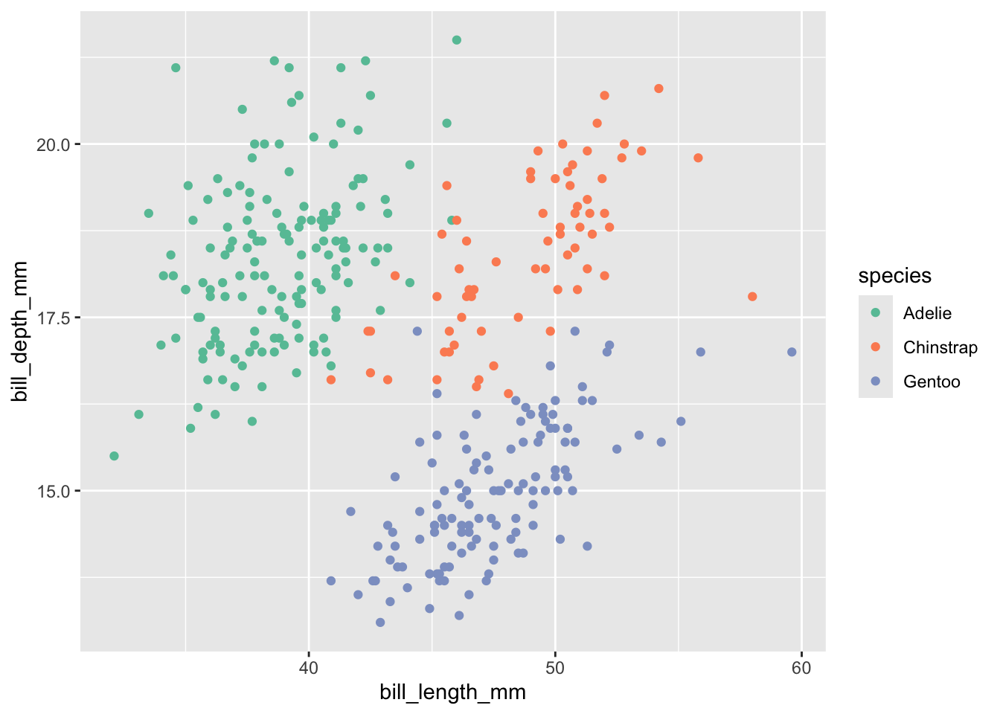
Let’s make the shape of the points vary by species to even more clearly separate the points by species:
Sidenote: When you’re typing within a function, you can hit “Enter” (or “Return” for Mac users) after a comma to continue code on a new line - see how I made a new line within geom_point(aes()). This can make things look much neater if you are typing out many arguments at once! It also does not affect how the code is run at all.
ggplot(data = penguins, aes(x = bill_length_mm, y = bill_depth_mm)) +
geom_point(aes(color = species,
shape = species)) +
scale_color_brewer(palette = "Set2")Warning: Removed 2 rows containing missing values or values outside the scale range
(`geom_point()`).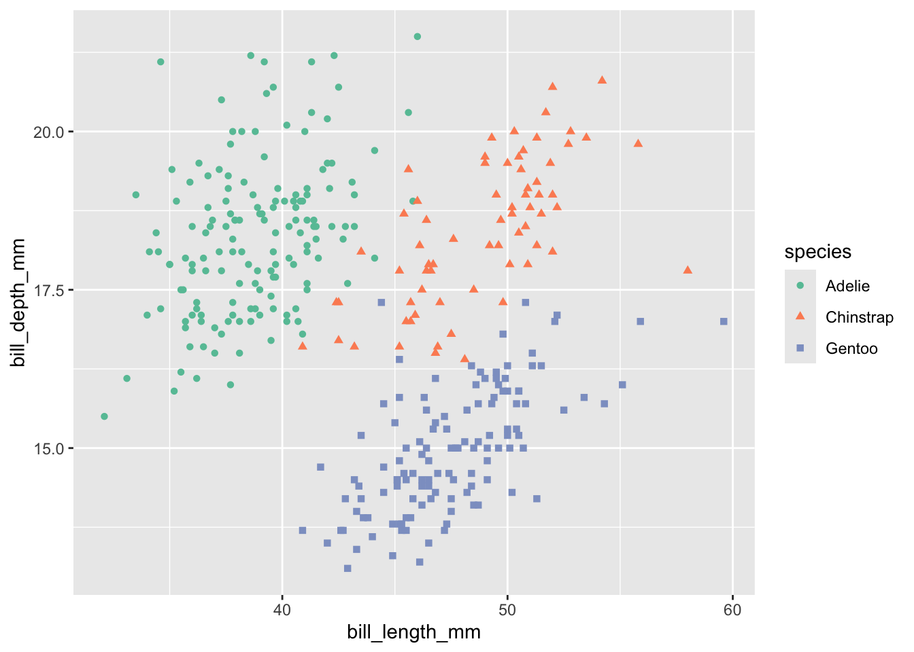
If we want to manually change the shapes that ggplot supplies, we use scale_shape_manual():
ggplot(data = penguins, aes(x = bill_length_mm, y = bill_depth_mm)) +
geom_point(aes(color = species,
shape = species)) +
scale_color_brewer(palette = "Set2") +
scale_shape_manual(values = c(8, 11, 14))Warning: Removed 2 rows containing missing values or values outside the scale range
(`geom_point()`).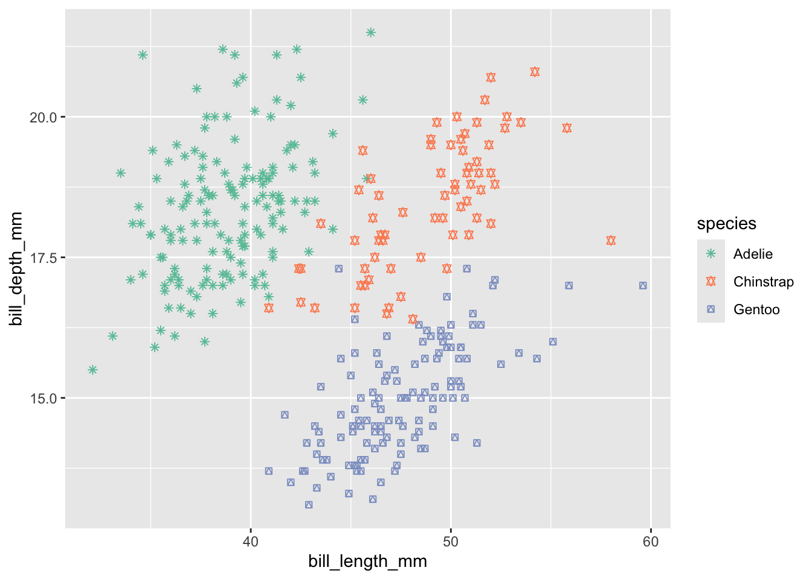
I personally like using shapes that have a black outline and are filled with the color, rather than being solid throughout. Change the manually selected shapes to 21, 22, and 24
ggplot(data = penguins, aes(x = bill_length_mm, y = bill_depth_mm)) +
geom_point(aes(color = species,
shape = species)) +
scale_color_brewer(palette = "Set2") +
scale_shape_manual(values = c(21, 22, 24))Warning: Removed 2 rows containing missing values or values outside the scale range
(`geom_point()`).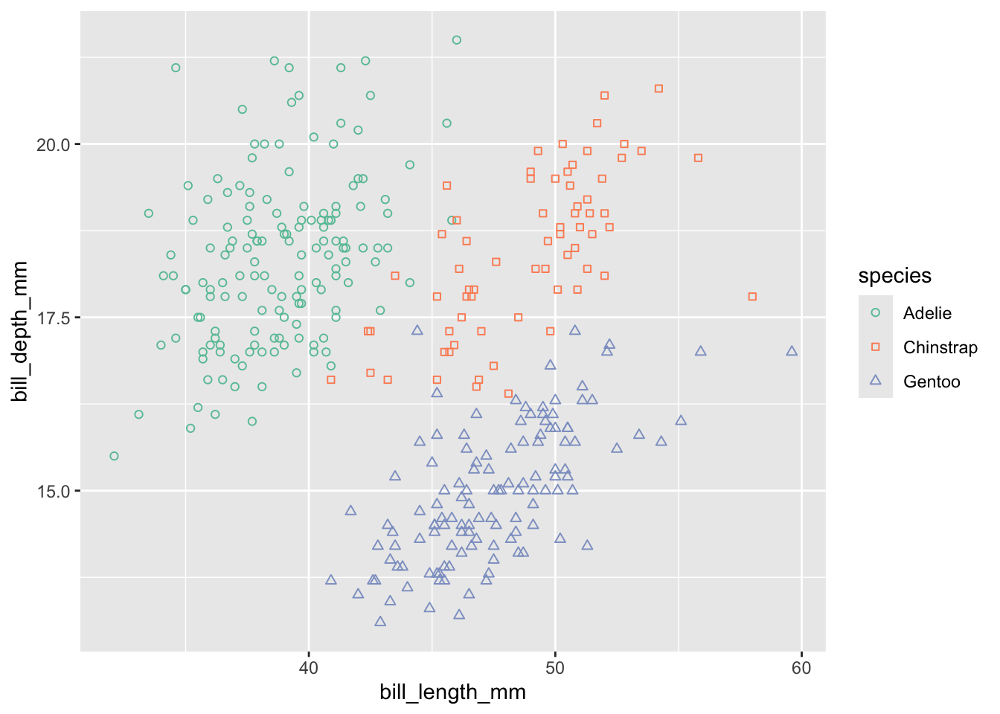
Why aren’t the shapes filled with the color we supplied? Some shapes and geoms in R have both color and fill capabilities. When they have both, then anything you supply to color will color the outline of the shape, while anything supplied to fill will fill in the shape (as we want here).
To make this switch, we are going to change the color = species aesthetic to fill = species and instead of scale_color_brewer() we will use scale_fill_brewer()
ggplot(data = penguins, aes(x = bill_length_mm, y = bill_depth_mm)) +
geom_point(aes(fill = species,
shape = species)) +
scale_fill_brewer(palette = "Set2") +
scale_shape_manual(values = c(21, 22, 24))Warning: Removed 2 rows containing missing values or values outside the scale range
(`geom_point()`).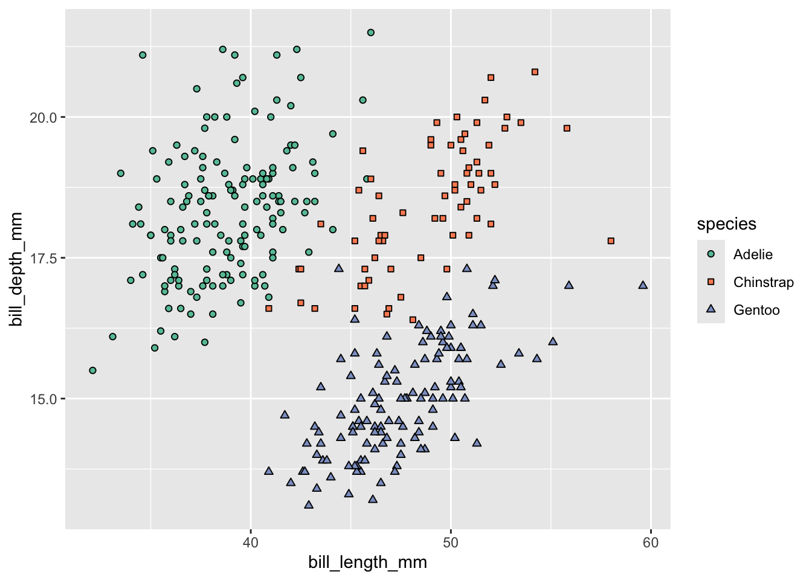
At this point, I’d also like to make the size of the points a little bigger, but I don’t want it to vary with something in the data. As in the last activity, to make an element of the geom vary statically across all of the data, put it outside of the aes() but still within the relevant geom:
ggplot(data = penguins, aes(x = bill_length_mm, y = bill_depth_mm)) +
geom_point(aes(fill = species,
shape = species),
size = 2.5) +
scale_fill_brewer(palette = "Set2") +
scale_shape_manual(values = c(21, 22, 24))Warning: Removed 2 rows containing missing values or values outside the scale range
(`geom_point()`).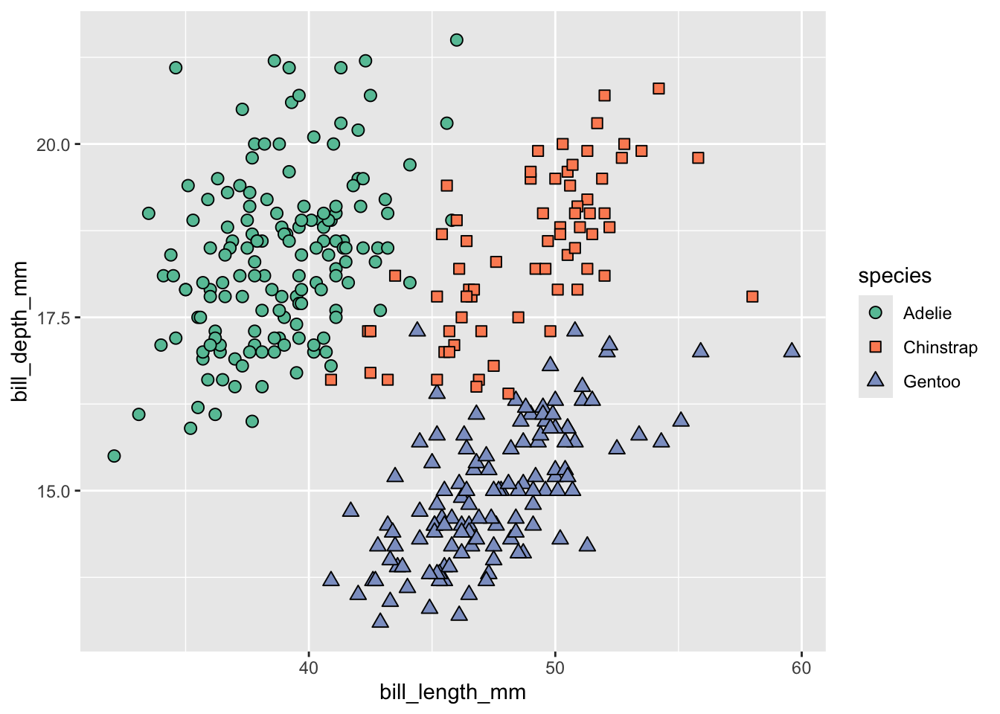
Let’s put a geom_smooth() with method = "lm" in there to look at the relationships more closely!
ggplot(data = penguins, aes(x = bill_length_mm, y = bill_depth_mm)) +
geom_point(aes(fill = species,
shape = species),
size = 2.5) +
geom_smooth(method = "lm") +
scale_fill_brewer(palette = "Set2") +
scale_shape_manual(values = c(21, 22, 24))`geom_smooth()` using formula = 'y ~ x'Warning: Removed 2 rows containing non-finite outside the scale range
(`stat_smooth()`).Warning: Removed 2 rows containing missing values or values outside the scale range
(`geom_point()`).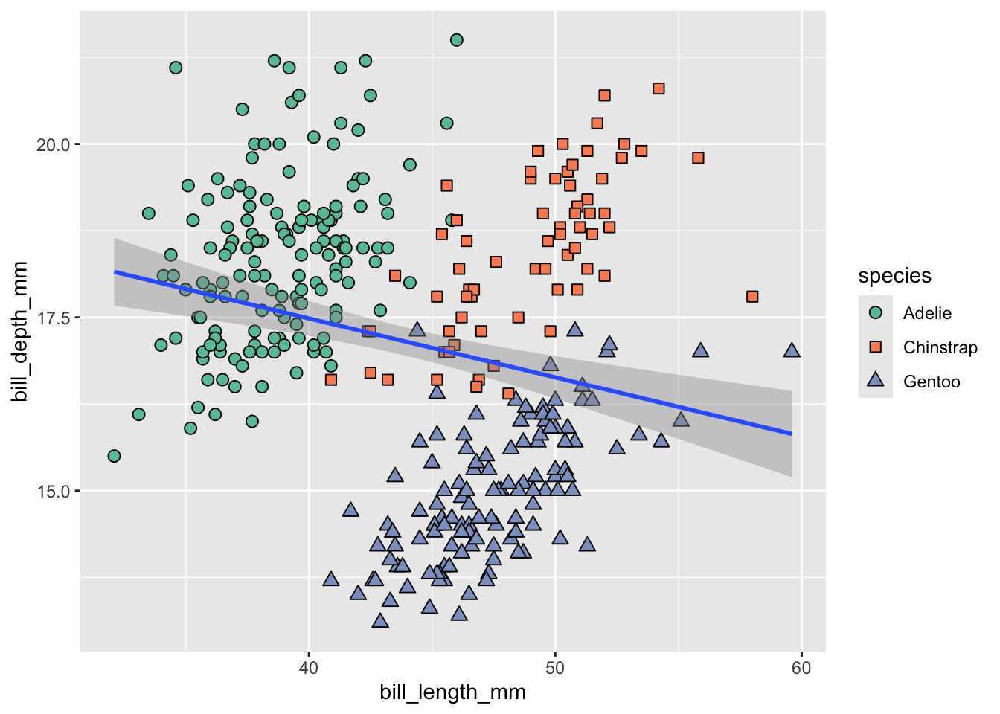
Uh oh, what’s going on here? Geoms adopt the aesthetics that are supplied in ggplot(aes(*)) as default. All we provided ggplot() was an x = and a y =, so as far as geom_smooth() is concerned, the species column doesn’t exist. Let’s add in aes(color = species) to the geom_smooth() function to tell it to color the smoothed line by species.
ggplot(data = penguins, aes(x = bill_length_mm, y = bill_depth_mm)) +
geom_point(aes(fill = species,
shape = species),
size = 2.5) +
geom_smooth(method = "lm",
aes(color = species)) +
scale_fill_brewer(palette = "Set2") +
scale_shape_manual(values = c(21, 22, 24))`geom_smooth()` using formula = 'y ~ x'Warning: Removed 2 rows containing non-finite outside the scale range
(`stat_smooth()`).Warning: Removed 2 rows containing missing values or values outside the scale range
(`geom_point()`).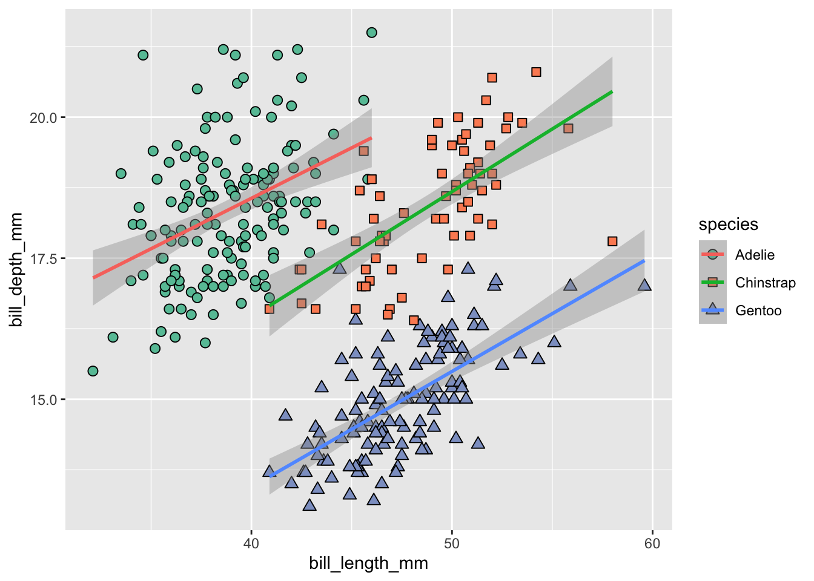
Great! Now there are three separate geom_smooth() lines - one for each species. However, our nice custom color scheme isn’t applied. That’s because geom_smooth() uses a color aesthetic, and earlier we changed scale_color_brewer() into scale_fill_brewer() to accommodate Calvin’s unreasonable desire to have shapes that fill in with color. Let’s re-add scale_color_brewer() underneath scale_fill_brewer()
ggplot(data = penguins, aes(x = bill_length_mm, y = bill_depth_mm)) +
geom_point(aes(fill = species,
shape = species),
size = 2.5) +
geom_smooth(method = "lm",
aes(color = species)) +
scale_fill_brewer(palette = "Set2") +
scale_color_brewer(palette = "Set2") +
scale_shape_manual(values = c(21, 22, 24))`geom_smooth()` using formula = 'y ~ x'Warning: Removed 2 rows containing non-finite outside the scale range
(`stat_smooth()`).Warning: Removed 2 rows containing missing values or values outside the scale range
(`geom_point()`).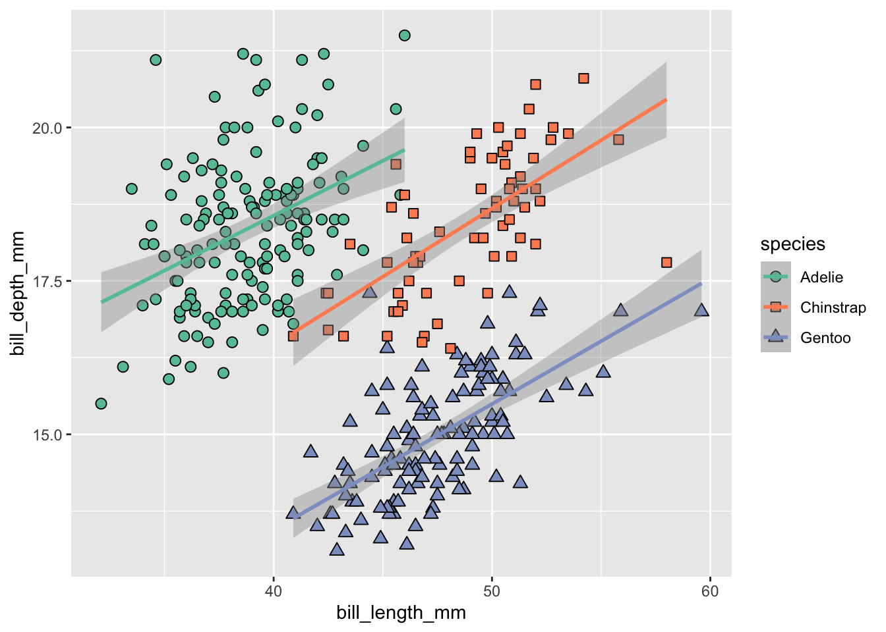
Scales for axis aesthetics specifically
The x- and y- axes are part of the aesthetics too, just like color, fill, and shape. You can modify the scales of the axes too. Two common ways people change up the scales of their graphs are:
- Changing the limits of their plots and
- Transforming axis values, for example to log scales.
Let’s change the limits of the y-axis to go between 0 and 30mm. It’s a continuous variable, so we use scale_y_continuous() and provide a vector of a minimum and a maximum to set the limits.
ggplot(data = penguins, aes(x = bill_length_mm, y = bill_depth_mm)) +
geom_point(aes(fill = species,
shape = species),
size = 2.5) +
geom_smooth(method = "lm",
aes(color = species)) +
scale_fill_brewer(palette = "Set2") +
scale_color_brewer(palette = "Set2") +
scale_shape_manual(values = c(21, 22, 24)) +
scale_y_continuous(limits = c(0, 30))`geom_smooth()` using formula = 'y ~ x'Warning: Removed 2 rows containing non-finite outside the scale range
(`stat_smooth()`).Warning: Removed 2 rows containing missing values or values outside the scale range
(`geom_point()`).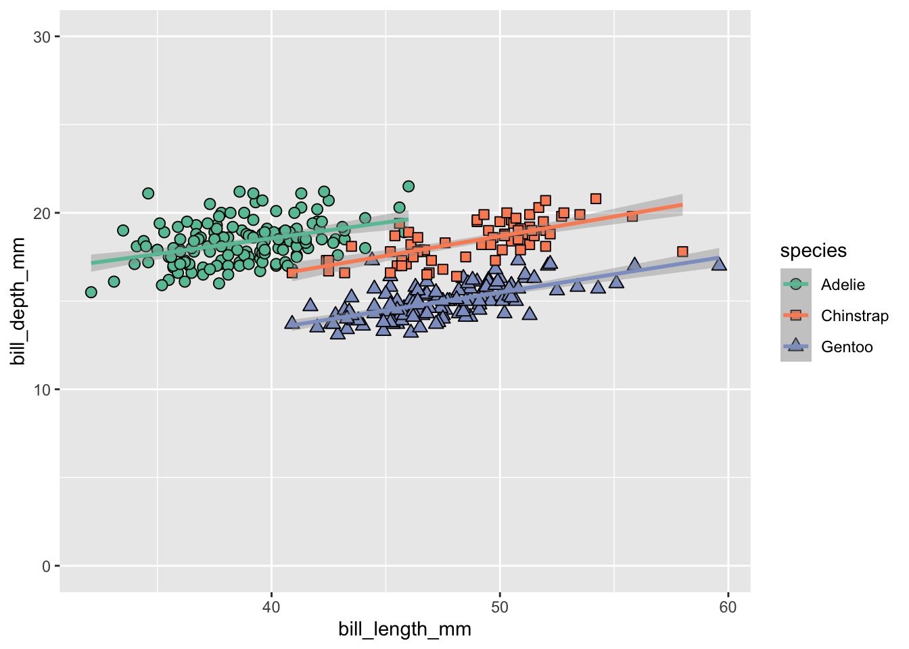
Q1.4: How to use the existing maximum for limits
Let’s say we want our limits to include 0, so we manually specify 0 as the minimum, but we want to use ggplot’s default for the maximum y limit. Go to the built-in help page of scale_y_continuous() and figure out what to replace the * with in limits = c(0, *). Then modify that code below.
ggplot(data = penguins, aes(x = bill_length_mm, y = bill_depth_mm)) +
geom_point(aes(fill = species,
shape = species),
size = 2.5) +
geom_smooth(method = "lm",
aes(color = species)) +
scale_fill_brewer(palette = "Set2") +
scale_color_brewer(palette = "Set2") +
scale_shape_manual(values = c(21, 22, 24)) +
scale_y_continuous(limits = c(0, NA))`geom_smooth()` using formula = 'y ~ x'Warning: Removed 2 rows containing non-finite outside the scale range
(`stat_smooth()`).Warning: Removed 2 rows containing missing values or values outside the scale range
(`geom_point()`).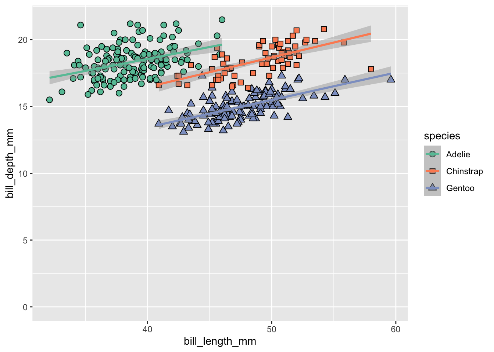
Another reason to modify the way your axes look is if we want to plot on a log scale. This can be very useful if your data spans many orders of magnitude (multiples of 10), which visually makes the very small values get masked by the large values.
We do this with scale_y_log10(), though this isn’t a great dataset to use as an example because the data doesn’t span a huge range - it won’t look very different!
ggplot(data = penguins, aes(x = bill_length_mm, y = bill_depth_mm)) +
geom_point(aes(fill = species,
shape = species),
size = 2.5) +
geom_smooth(method = "lm",
aes(color = species)) +
scale_fill_brewer(palette = "Set2") +
scale_color_brewer(palette = "Set2") +
scale_shape_manual(values = c(21, 22, 24)) +
scale_y_log10()`geom_smooth()` using formula = 'y ~ x'Warning: Removed 2 rows containing non-finite outside the scale range
(`stat_smooth()`).Warning: Removed 2 rows containing missing values or values outside the scale range
(`geom_point()`).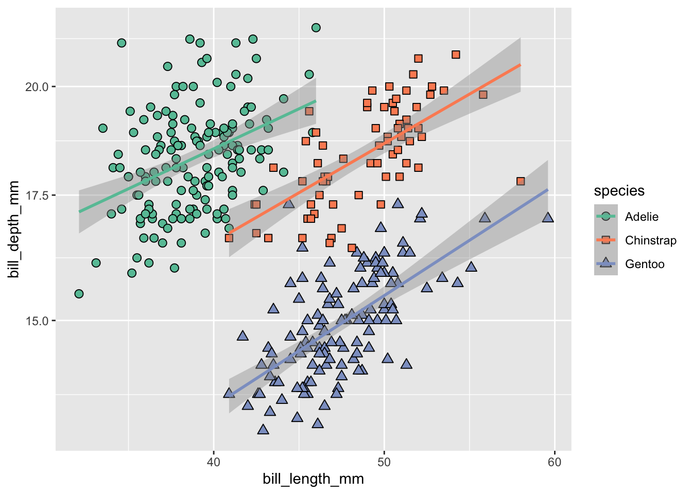
Axis and legend titles
Let’s backtrack a little bit to the graph before we started messing with the y-axis and talk about how to make better axis and legend titles. By default, ggplot creates these titles based on the column names that you specify within aes(). However, “bill_length_mm” is a pretty lame axis title for a presentation.
To change this, we use the labs() function, which allows us to rename whatever aes() elements we have specified. We do this with the format x = "New x axis title" and/or fill = "New legend title for the fill". Let’s change the x and y axis titles:
get_labs()`geom_smooth()` using formula = 'y ~ x'Warning: Removed 2 rows containing non-finite outside the scale range
(`stat_smooth()`).$fill
[1] "species"
$colour
[1] "species"
$shape
[1] "species"
$x.sec
NULL
$x
[1] "bill_length_mm"
$y
[1] "bill_depth_mm"
$y.sec
NULL
$alt
[1] ""# get_labs() shows you what labels are using what variable.
ggplot(data = penguins, aes(x = bill_length_mm, y = bill_depth_mm)) +
geom_point(aes(fill = species,
shape = species),
size = 2.5) +
geom_smooth(method = "lm",
aes(color = species)) +
scale_fill_brewer(palette = "Set2") +
scale_color_brewer(palette = "Set2") +
scale_shape_manual(values = c(21, 22, 24)) +
labs(x = "Bill length (mm)",
y = "Bill depth (mm)",
fill = "Species", colour ="Species", shape = "Species")`geom_smooth()` using formula = 'y ~ x'Warning: Removed 2 rows containing non-finite outside the scale range
(`stat_smooth()`).Warning: Removed 2 rows containing missing values or values outside the scale range
(`geom_point()`).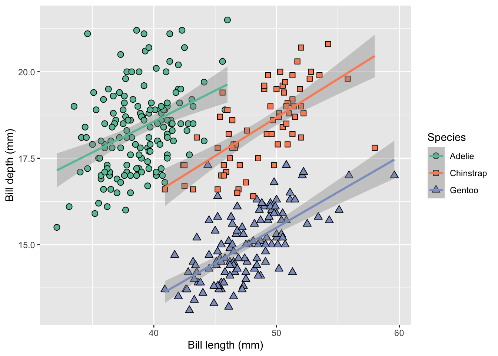
Q1.5: Change the legend title
The legend title is currently not capitalized - add to the labs() function to change the title of the correct aesthetic(s) to make the legend title read “Species”. (You may encounter an unexpected result - try and figure out what you can do to make it appear how you want! Hint: how many different aesthetics is species currently mapped to?).
Themes
This is looking decent, but there’s still more we can do. ggplot provides us with LOTS of flexibility in how the non-data-related components of the graph look (think the font size, background color, axis grid lines, etc.). To modify this, we add themes using the theme() function.
Go to the help page for theme(), read the description, and scroll down to see the extent of the components you can modify. Also see this link for a handy visual guide: https://statsandr.com/blog/best-rstudio-addins-in-rstudio-or-how-to-make-your-coding-life-easier_files/ggplot_theme_system_cheatsheet.pdf
?theme()Within the theme() function, we specify the element that we want to modify. For instance, the axis.title.x = modifies the x axis title. Because the x axis title is a text element, we then add axis.title.x = element_text() and specify things within the element_text() function. Here I will change the text color to red and increase the size.
ggplot(data = penguins, aes(x = bill_length_mm, y = bill_depth_mm)) +
geom_point(aes(fill = species,
shape = species),
size = 2.5) +
geom_smooth(method = "lm",
aes(color = species)) +
scale_fill_brewer(palette = "Set2") +
scale_color_brewer(palette = "Set2") +
scale_shape_manual(values = c(21, 22, 24)) +
labs(x = "Bill length (mm)",
y = "Bill depth (mm)",
fill = "Species",
color = "Species",
shape = "Species") +
theme(axis.title.x = element_text(color = "red",
size = 16))`geom_smooth()` using formula = 'y ~ x'Warning: Removed 2 rows containing non-finite outside the scale range
(`stat_smooth()`).Warning: Removed 2 rows containing missing values or values outside the scale range
(`geom_point()`).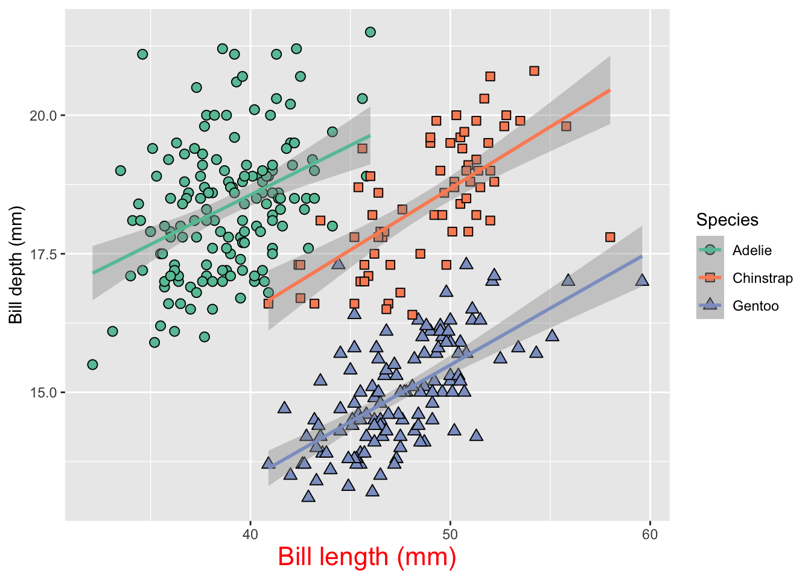
Depending on what the element is, you use a different element_*() function:
element_text(): Controls text appearance (font, size, color, etc.) for titles, labels, and axis text.element_rect(): Controls the appearance of rectangular elements like the plot background and legend background (fill, border color, etc.).element_line(): Controls the appearance of line elements like grid lines and axis lines (color, size, linetype, etc.).element_blank(): Hides or removes an element entirely (e.g.,panel.grid.major = element_blank()).
Q1.6: What font faces are available?
Go to the element_text() help page: under “Usage” you will see what arguments each element function can modify, and if you scroll down to “Arguments,” you can read more about the specifics of each element you can modify.
What are the four options for the “face” of the text?
#### Q1.6 Answer: Options include plain, italic, bold, and bold.italic
Modifying ALL THAT from scratch can be overwhelming! Thankfully, R has a handful of built-in, pre-curated themes that you can choose from. Add on a new line to this graph and start typing theme_ - note how multiple options pop up! Let’s click on and add theme_classic().
ggplot(data = penguins, aes(x = bill_length_mm, y = bill_depth_mm)) +
geom_point(aes(fill = species,
shape = species),
size = 2.5) +
geom_smooth(method = "lm",
aes(color = species)) +
scale_fill_brewer(palette = "Set2") +
scale_color_brewer(palette = "Set2") +
scale_shape_manual(values = c(21, 22, 24)) +
labs(x = "Bill length (mm)",
y = "Bill depth (mm)",
fill = "Species",
color = "Species",
shape = "Species") +
theme(axis.title.x = element_text(color = "red",
size = 16)) +
theme_classic()`geom_smooth()` using formula = 'y ~ x'Warning: Removed 2 rows containing non-finite outside the scale range
(`stat_smooth()`).Warning: Removed 2 rows containing missing values or values outside the scale range
(`geom_point()`).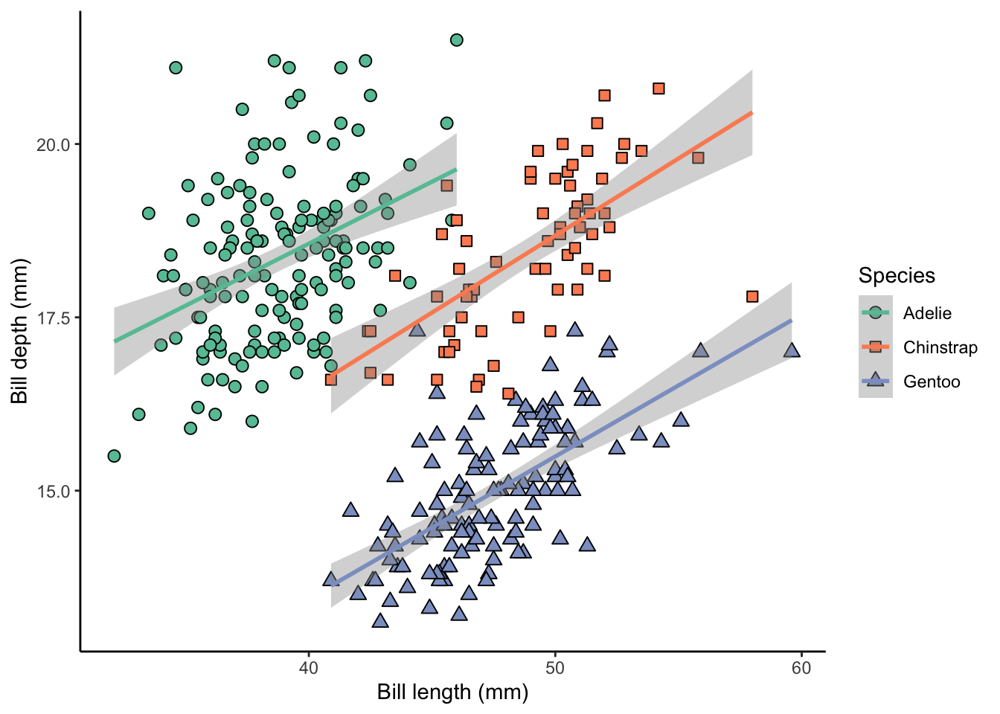
That looks quite nice! The weird gray default background is gone, and there’s now a traditional x and y axis with no axis panel grids.
Note that the large, red x-axis title has been overridden by the new theme we put in. What happens when you switch the order and put theme_classic() before theme(...)? (don’t forget to remove/add +’s where applicable…).
Try out some of the other built-in themes and see what you like!
The customization of themes contains far too much content to walk through here - hopefully this provides a springboard into the possibilities! Always remember to revisit help pages and the cheatsheets that have been provided along the way. Here are a couple annotated plots that include a smattering of some other things that we didn’t cover:
# Graph bill length vs depth
ggplot(data = penguins, aes(x = bill_length_mm, y = bill_depth_mm)) +
# Add points separated by species
geom_point(aes(fill = species,
shape = species),
# Change the size of the points
size = 2.5) +
# Add a lm line for each species
geom_smooth(aes(color = species),
method = "lm") +
# Customize the fill and color of the geoms
scale_fill_brewer(palette = "Set2") +
scale_color_brewer(palette = "Set2") +
# Manually select the shape of the points
scale_shape_manual(values = c(21, 22, 24)) +
# Make nicer axis and legend titles based on the aes() specified above
labs(x = "Bill length (mm)",
y = "Bill depth (mm)",
fill = "Species",
color = "Species",
shape = "Species") +
# Add in a plot title
ggtitle("Bill depth vs length of three penguin species") +
# Change the theme to theme_minimal
theme_minimal() +
theme(
# Change the size of axis titles and text (both x and y at once!)
axis.title = element_text(size = 14),
axis.text = element_text(size = 12),
# Change the size of legend title and text
legend.text = element_text(size = 12),
legend.title = element_text(size = 12),
# Place the legend inside the plot, instead of the default outside
legend.position = "inside",
# Specify exactly where in x/y space (from 0 to 1) the legend should sit
legend.position.inside = c(0.9, 0.15),
# Color (not fill!) the legend - color refers to the outline here
legend.background = element_rect(color = "black")
)`geom_smooth()` using formula = 'y ~ x'Warning: Removed 2 rows containing non-finite outside the scale range
(`stat_smooth()`).Warning: Removed 2 rows containing missing values or values outside the scale range
(`geom_point()`).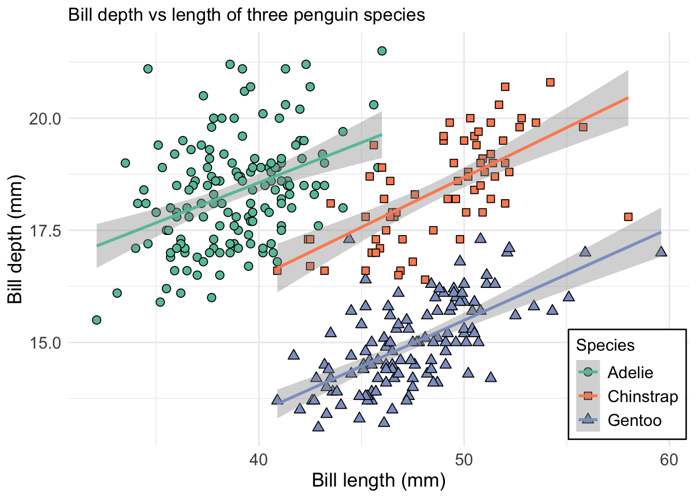
# Graph bill length vs depth
ggplot(data = penguins, aes(x = species, y = body_mass_g)) +
# Put violin plots, which show the distribution of points like a histogram/density plot, underneath each set of points
geom_violin(aes(fill = species),
# make the violin plots quite transparent
alpha = 0.25
) +
# Add points separated by species
geom_jitter(aes(fill = species,
shape = species),
# Change the size of the points
size = 2.5,
# Change the default amount that the points are "jittered" in the x (width) and y (height direction)
width = .1,
height = 0,
# Make the points slightly transparent
alpha = 0.75
) +
# Customize the fill and color of the geoms
scale_fill_brewer(palette = "Set2") +
scale_color_brewer(palette = "Set2") +
# Manually select the shape of the points
scale_shape_manual(values = c(21, 22, 24)) +
# Make nicer axis and legend titles based on the aes() specified above
labs(x = "Species",
y = "Body mass (g)",
fill = "Species",
color = "Species",
shape = "Species") +
# Change the theme to theme_minimal
theme_minimal() +
theme(
# Change the size of axis titles and text (both x and y at once!)
axis.title = element_text(size = 14),
# Add a little bit of space on the top (t) and the right (r) of the x and y axis titles respectively
# This separates them from the axis text a bit
axis.title.x = element_text(margin = margin(t = 10)),
axis.title.y = element_text(margin = margin(r = 10)),
axis.text = element_text(size = 12),
# Change the size of legend title and text
legend.text = element_text(size = 12),
legend.title = element_text(size = 12)
)Warning: Removed 2 rows containing non-finite outside the scale range
(`stat_ydensity()`).Warning: Removed 2 rows containing missing values or values outside the scale range
(`geom_point()`).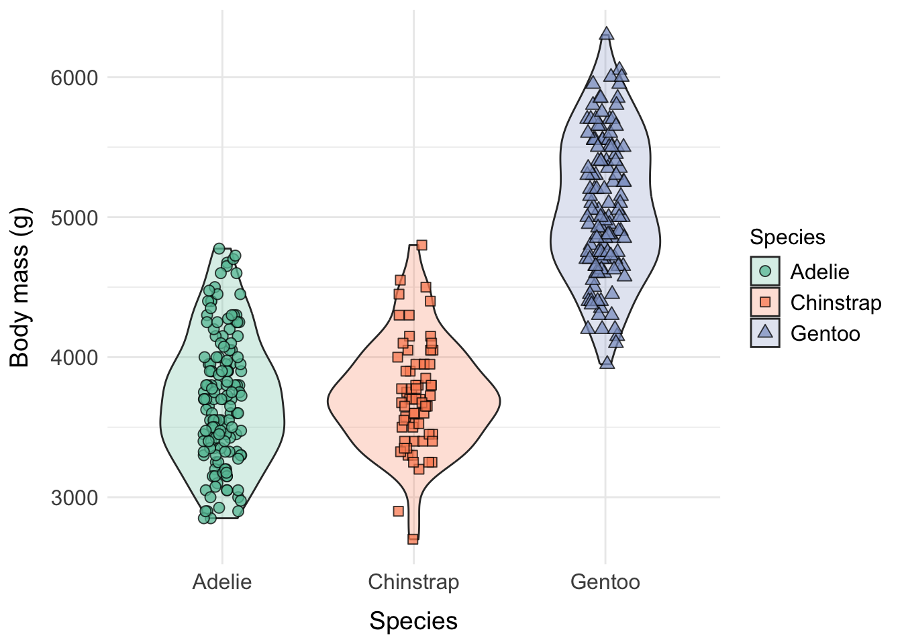
2) Make your abalone figure ready for prime time!
Next, it’s time to practice what you’ve learned!
Please take a look at the feedback you got on the abalone figure (go back to the Google slides, which now have the comments pasted in the speaker notes). Decide which aspects of the feedback you find useful, combined with your own thoughts on how to make the figure more effective as an explanatory graph.
Q2.1: Pick an audience for your explanatory graph.
Our audience will be the general public.
This could be everything from another scientist to a policymaker, a community member, your grandmother, or anyone else. Please write a short explanation of who this person or group of people is.
Q2.2: Remake your original graph from Monday.
This should be as simple as copy and pasting the code you used on Monday (though remember to read in the data!). You’ll need to create a new code block below here (remember how to do that?).
abalone <- read.csv("abalone_landings.csv")%>%
mutate(Abalone_Species = if_else(Abalone_Species == "While", "White", Abalone_Species))ggplot(data = abalone, aes(x = Year, y = Abalone_Landings_lbs, color = Abalone_Species)) +
geom_smooth() +
facet_wrap(Abalone_Species ~ .,scales="free_y") +
scale_color_manual(values = c(
"Red" = "firebrick",
"Green" = "darkgreen",
"Pink" = "deeppink",
"Black" = "black",
"White" = "grey"
)) +
scale_y_continuous(limits=c(0,NA))+
theme_classic()`geom_smooth()` using method = 'loess' and formula = 'y ~ x'Warning: Removed 39 rows containing missing values or values outside the scale range
(`geom_smooth()`).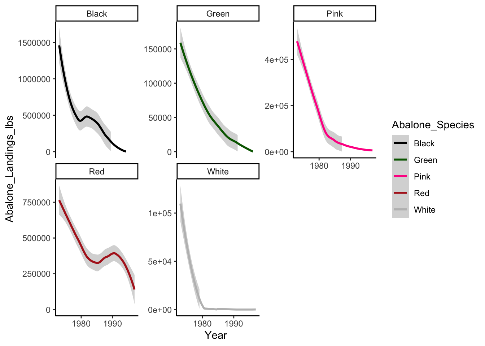
ggsave("abalone_landings_by_species.png",
width = 8,
height = 6,
units = "in",
dpi = 300)`geom_smooth()` using method = 'loess' and formula = 'y ~ x'Warning: Removed 39 rows containing missing values or values outside the scale range
(`geom_smooth()`).Q2.3: Describe how you would like to modify the figure to make it more effective as an explanatory graph for the audience you chose in Q2.1.
We would like to change the y-axis into single digit numbers and/or text. And remove “_” from legend title.
The past two activities have provided a brief sampling of the possibilities of customizing graphs using ggplot. You are welcome to explore other possibilities, too, either on your own or by talking with the teaching team.
Q2.4 Make the explanatory graph!
ggplot(data = abalone, aes(x = Year, y = Abalone_Landings_lbs, color = Abalone_Species)) +
geom_smooth() +
facet_wrap(Abalone_Species ~ .,scales="free_y") +
scale_color_manual(values = c(
"Red" = "firebrick",
"Green" = "darkgreen",
"Pink" = "deeppink",
"Black" = "black",
"White" = "grey"
)) +
scale_y_continuous(limits=c(0,NA))+
theme_classic()+
labs(
colour="Abalone Species",
y="Abalone Landings"
)`geom_smooth()` using method = 'loess' and formula = 'y ~ x'Warning: Removed 39 rows containing missing values or values outside the scale range
(`geom_smooth()`).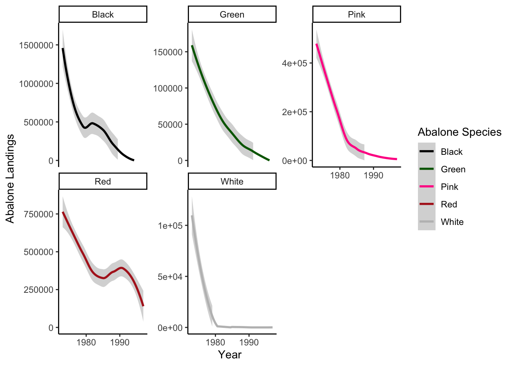
Use what you have learned and make a Really Nice Graph for your audience! Go wild with making it pretty.
Q2.5: Explain your graph
All species except for red Abalone have declined to 0 landings by the end of the studies duration periond.
Write a couple sentences explaining the message you hope your audience will take away from seeing your graph.
Wrap up and submit
As in the previous lesson, render this Quarto document to a PDF (if you can; see guidance at the top) and submit this through GradeScope.